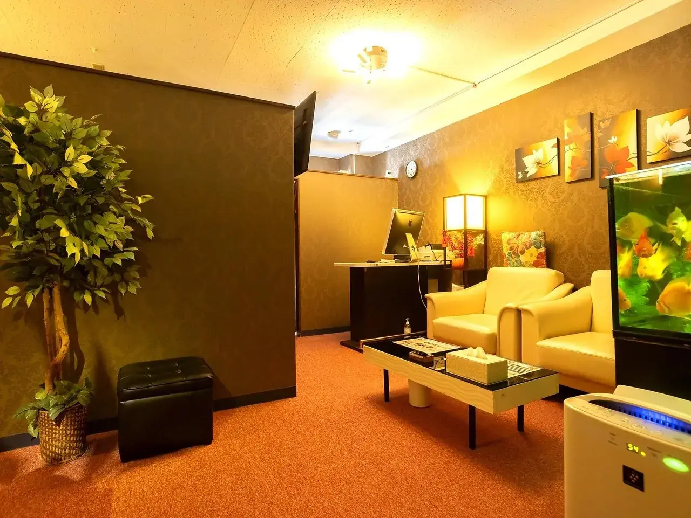

1 min walk
新横浜駅 / Shin-Yokohama Sta.
PepperMoon Shin-Yokohama
- Hours
- Weekdays 11:00–2:00 / Weekends & holidays 10:00–2:00 (last entry 0:30)
- Tel
- 045-624-9825
- Address
- 7F-A sk2 Bldg., 2-14-24 Shin-Yokohama, Kohoku-ku, Yokohama, Kanagawa (next to the Ramen Museum)